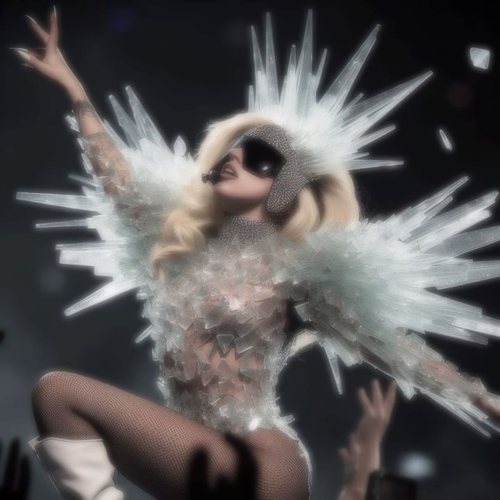
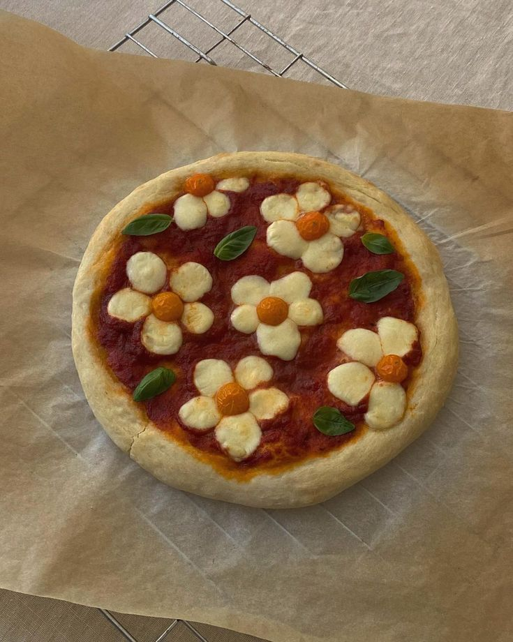
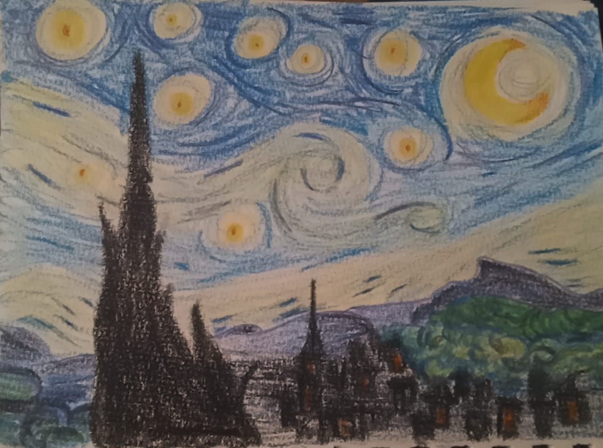

Recent, am participat la un curs de programare, dedicat fetelor ce vor sa invete mai multe despre tehnologie. Programul "Breaking Barriers" este organizat de asociatia Adfaber si reprezinta un pas important in promovarea diversitatii in domeniul IT. Am auzit de acest program de la profesoara mea de TIC si, impreuna cu prietenele mele, am decis sa ne implicam! Am avut o experienta foarte placuta, am intalnit traineri pasionati, prietenosi, dornici sa ne invete ceva nou si interesant, de asemenea am acumulat cunostinte despre crearea unor aplicatii si site-uri web. Abia astept partea de mentorat! Daca vreti si voi sa participati la "Girls Code: Breaking Barriers", gasiti link-ul site-ului oficial aici! 💜

Artistul meu preferat este Lady Gaga. Am descoperit cantecele ei prin 2022, dar consider ca am devenit fana abia prin 2023, cand am primit mai multe sugestii de melodii de la un prieten. Ea este o femeie extraordinara, pune inima si suflet in ceea ce face si isi iubeste fanii. Este unul dintre modelele mele si o apreciez pentru stilul vestimentar, cantecele si rationamentul ei. Albumul nr #1 il consider The Fame, primul ei album. Imi place tema, versurile si genul muzical!! 🕶⚡💙

Castelul Bran este amplasat la intrarea în pasajul Rucăr-Bran, pe drumul ce leagă Braşov de Câmpulung, incadrat de culmile munţilor Bucegi si Piatra Craiului. Bran se gaseşte la mai puţin de 30 km de Braşov, pe drumul naţional DN73, plecand din Braşov spre vest prin cartierul Bartolomeu. Distanta de la Bucureşti este de aproximativ 200 km. 🏰

Gilmore Girls este serialul meu preferat!! El urmareste, pe parcursul a 7 sezoane, viata celor doua Gilmore, Lorelai si fiica ei, Rory. Povestea incepe de cand Rory implineste varsta de 16 ani, aceeasi varsta la care mama ei a ramas insarcinata din greseala. Mai degraba prietene bune decat mama si fiica, cele doua isi traiesc viata aproape independent de parintii lui Lorelai. 💙

Pizza este un fel de mâncare cu originea în Napoli, Italia. Este o pâine plată, de obicei rotundă, acoperită cu sos de roșii și brânză, plus alte topping-uri opționale, preparată la cuptor. 🍕

Un desen pe care l-am facut recent. Am vrut sa recreez "Starry Night" de Vincent Van Gogh! Cum vi se pare?? 😚